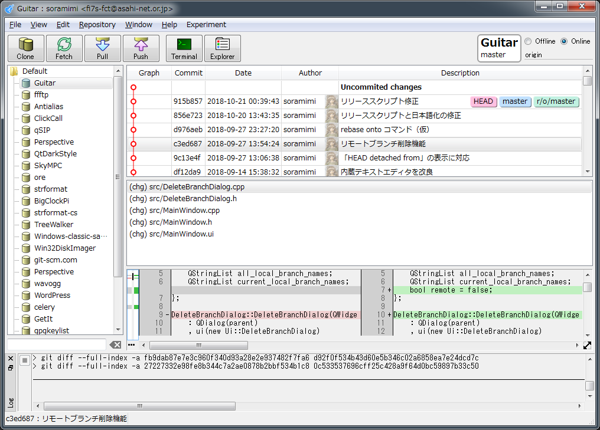

2018-10-24
Guitar v0.9
ソースコードリビジョン管理ツールGitのGUIクライアントアプリケーション Guitar, v0.9 です（前回は0.2で、0.3～0.8は欠番です）。来るバージョン1.0のβ版という位置づけでもあります。

メイン画面
{kind=link}

未知のSSHホスト接続の確認ダイアログ

http(s)認証ダイアログ

GPG署名
システム要件
Windows
- XP、Vista、7、8、8.1、10
- 筆者（原作者）のメイン開発環境は Windows 7 です。 Windows 10 でも基本的な動作は確認しています。それ以外のOSでは、簡単な起動確認をした程度ですので、動くかもしれませんが、動かないかもしれません。
- もし動かない場合、「 Visual Studio 2013 の Visual C++ 再頒布可能パッケージ （x86）」 のインストールをお試しください。
- XP/Vista対応のため、あえて古めのQt（v5.7.1）を採用しています。
- 32ビットアプリケーションとしてビルドしています。
Linux
- Ubuntu
- 筆者の開発環境は 16.04 で、18.04でも動作可能だと思います。
- 32ビット版と64ビット版を作成しました。
- ディストリビューションやバージョンが適合しない場合、Qt開発環境を自前で用意して、独自ビルドする必要があるかもしれません。
- Raspberry Pi
- 最新の Raspbian stretch に対応します。
macOS
- High Sierra に対応します。
- Mojave では、起動することだけは確認しましたが、OSのダークテーマ使用時に、テキストが白背景に白文字で描かれて、文字が読めない現象があります。
- Guitarのダークテーマ（黒画面モード）の対応が、ちょっと中途半端で、描画が崩れることがあります。ある程度は動作しますが、気になる方は、標準モードで我慢してください。
ダウンロード
https://files.soramimi.jp/guitar/0.9.0/
変更点
前回（v0.2）が2017年12月のリリースでしたので、それから、書き切れないくらい改良を行いました。大きなところでは、内蔵テキストエディタ（兼・簡易ターミナルエミュレータ）の強化に伴う、対話処理を実装しました。未知のSSHホストに接続する際の確認（yes/no）入力や、ユーザーログイン情報（ID/パスワード）入力をGUIで行えるようにしました。画面描画では、標準の白画面に加えて、黒画面（ダークテーマ）をサポートしました。ただし、macOS上での挙動はあまり深くテストしていませんので、過度な期待はしないでください。
設定ファイルの保存場所（重要）
旧（v0.9未満） と新（v0.9以降）で、設定ファイルの保存場所を変更しました。 アプリケーションの設定は Guitar.ini 、ブックマークは bookmarks.xml に保存されます。旧バージョンから設定を引き継ぐには、ファイルを移動する必要があります。
Windows
旧： C:\Users\username\AppData\Roaming\soramimi.jp\Guitar
新： C:\Users\username\AppData\Local\soramimi.jp\Guitar
Linux
旧： ~/.local/share/soramimi.jp/Guitar
新： ~/.config/soramimi.jp/Guitar
macOS
旧： ~/Library/Application Support/soramimi.jp/Guitar
新： ~/Library/Preferences/soramimi.jp/Guitar